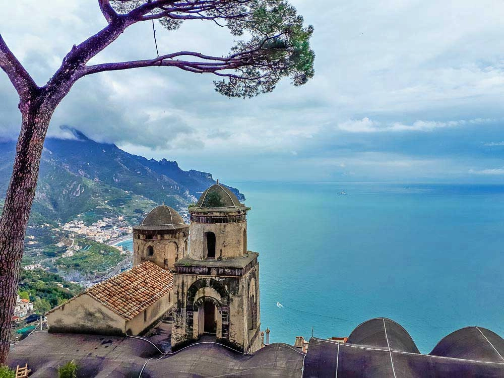

Ravello foi, provavelmente, a cidade que mais me surpreendeu em toda a Costa Amalfi. Em primeiro lugar, porque está situada numa posição elevada na montanha e empoleirada no topo de uma falésia, o que proporciona as melhores e mais impressionantes vistas sobre o mar e toda a costa. Depois, porque a concentração de edifícios e actividades artísticas e culturais é, verdadeiramente, surpreendente e inesperada para uma vila tão pequena. Destes, pode-se destacar o Ravello Festival (um festival anual de música e artes), a surpreendente sala de concertos de música clássica dentro de uma igreja histórica (Santissima Annunziata) e até mesmo um auditório desenhado pelo conhecido arquitecto brasileiro Oscar Niemeyer. Consulte o programa de concertos na Annunziata no site da Ravello Concert Society.
Ravello